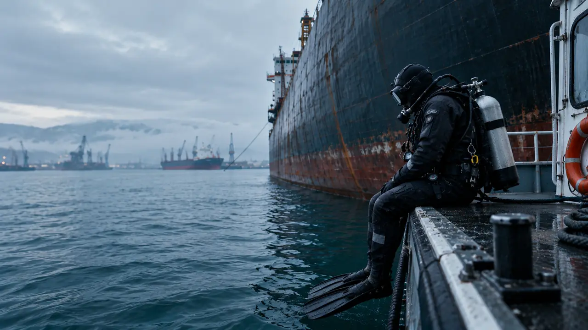
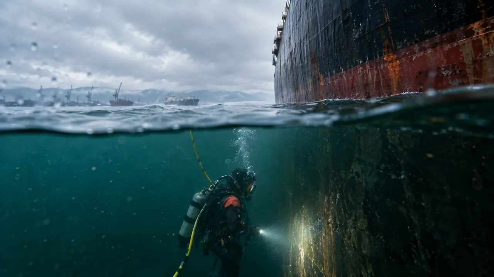
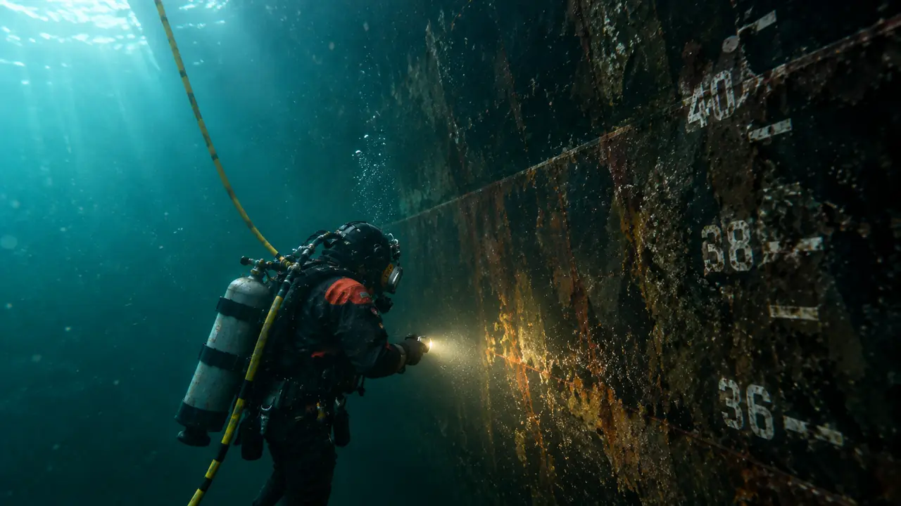
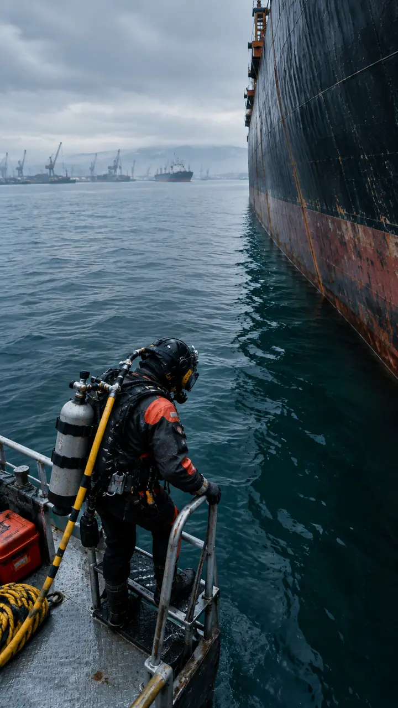
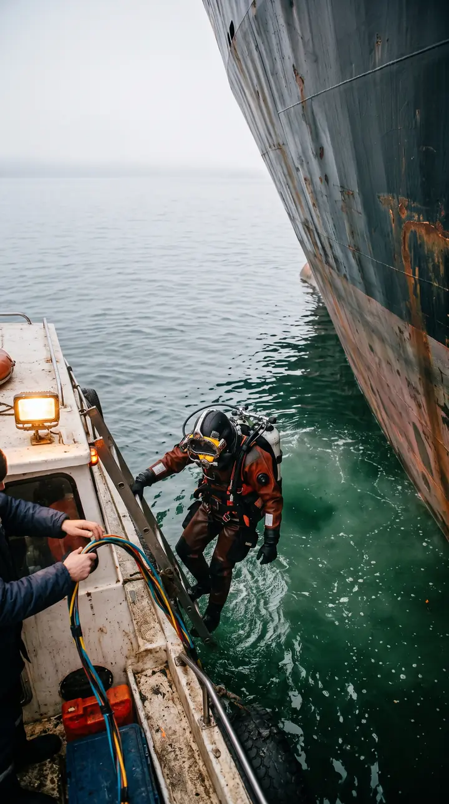
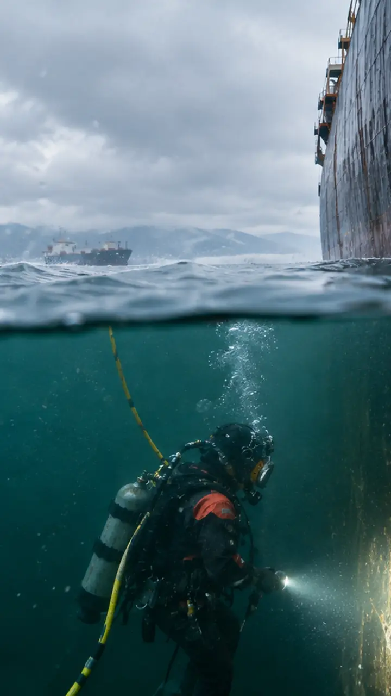
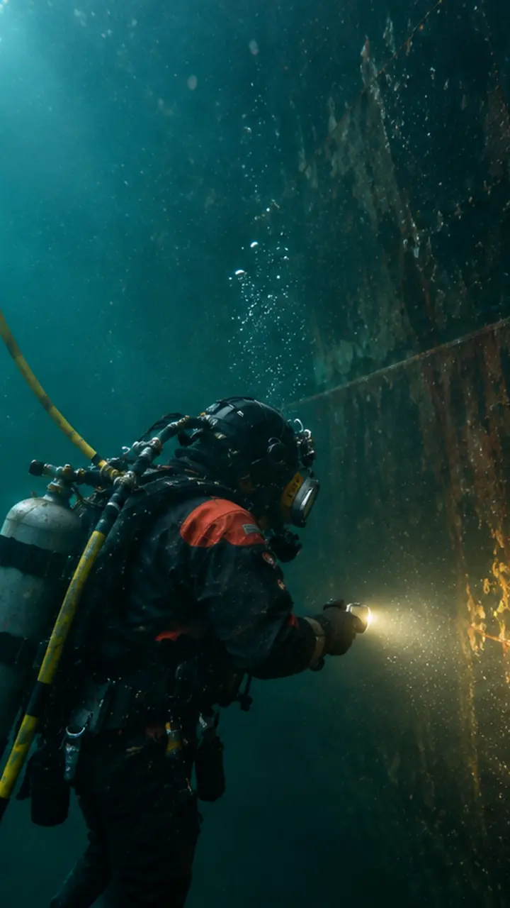

Владивосток • Находка • Восточный • Козьмино • Сахалин
Водолазные работы на Дальнем Востоке
Работа 24/7
Срочный выезд
+7 (423) [___-__-__]дежурный инженер на связи круглосуточно
Прокрутите — погружение под воду
02 — Услуги
Наши услуги
Шесть частых причин обращения. Нажмите на карточку — откроется страница услуги с порядком работ и отчётностью.
Намотка на винтСрочноОсвобождаем винт от троса и сетей без буксировки в док
Обрастание и перерасход топливаОчистка корпуса и винта водолазным способом
Осмотр для класса и In-Water SurveyОсвидетельствование с видеофиксацией и отчётом
Течь или повреждение корпусаСрочноАварийный осмотр, временная заделка на месте
Обследование причала и ГТСПромер глубин, осмотр свай, дефектная ведомость
Поиск и подъёмСрочноПоиск затонувшего имущества, судоподъём
03 — Преимущества
Почему выбирают нас
Своя техника и дежурная бригада — не ждём субподрядчиков и не срываем сроки.
Дежурство 24/7
Инженер на связи круглосуточно, срочный выезд
Своя станция и катер
Водолазная станция, катер и снаряжение на базе
Видеофиксация
Ход работ виден на посту связи в реальном времени
Отчёт в день окончания
Видео, фото, замеры и акт — для инспектора и судовладельца
04 — Этапы
Как мы работаем
От заявки до отчёта — четыре шага, у каждого своё время.
1
Заявка и расчёт
Дежурный инженер уточняет судно, порт и задачу
[N] ч
2
Выезд бригады
Катер, станция и снаряжение — со своей базы
[N] ч
3
Работа с видеофиксацией
Ход работ виден на посту связи в реальном времени
[N] ч
4
Отчёт и акт
Видео, фото, замеры и акт выполненных работ
в день окончания
05 — Зима и рейд
Работаем круглый год
Зимний лёд и открытый рейд не останавливают работы — станция и бригада выходят в любых условиях Дальнего Востока.
Лёдспуск через майну
Рейдработа с катера у борта
Любой сезондежурная бригада 24/7